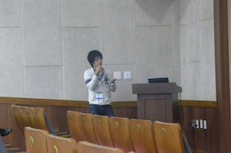

白井 開渡

| 研究テーマ | トポロジカル絶縁体の電子状態の研究 |
|---|---|
| 出身 | 愛知 |
| 卒業論文題目 | トポロジカル絶縁体TlBiSe2のキャリアドーピングの研究 |
| 国内学会 | 1. 学会名：第３２回日本表面科学科学術講演会
題目：トポロジカル絶縁体TlBISe2のヘリカルスピン構造とキャリアチューニング 場所：東北大学(2012.11) 口頭発表 2. 学会名：第２６回日本放射光学会年会 題目：トポロジカル絶縁体TlBISe2のヘリカルスピン構造とキャリア制御 場所：名古屋大学(2013.1) 口頭発表 |
| 国際学会 |
1. 学会名：2011 Japanese-Korean Student Workshop 場所：Busan, South Korea(2011.9) 口頭発表 |